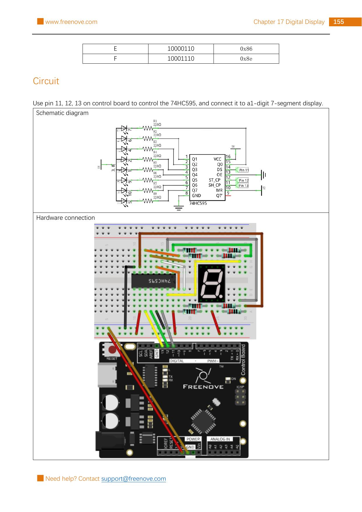

Wire a common-anode 1-digit 7-segment display through a 74HC595 shift register, then make it count from 0 to 9 using Arduino pins 11, 12, and 13.
Gather the parts
Uno-compatible board and USB cable
Breadboard
1 74HC595 shift-register IC
1 common-anode 1-digit 7-segment display
8 resistors marked 220 Ω
18 male-to-male jumper wires
Important: this lesson follows the Freenove kit’s common-anode display and its source layout. Do not substitute a display with unknown pinout or a common-cathode display. Use only the board’s 5 V, GND, and pins 11–13 connections shown here; never connect this breadboard to wall power, a battery pack, or a higher-voltage circuit.
Build it, one check at a time
Step 1 — Read the source circuit before plugging in
Keep USB unplugged. The unchanged Freenove reference page below contains both the schematic and breadboard layout for Project 17.1. It shows a 74HC595 between the board and a common-anode one-digit display. Each of the eight LED paths uses its own 220 Ω resistor.

Reference image: Freenove Ultimate Starter Kit, Tutorial.pdf, Chapter 17, Project 17.1, PDF page 159 / printed page 155. Rasterized unchanged from the permitted source pack under CC BY-NC-SA 3.0.
Step 2 — Give the 74HC595 safe power connections
Place the 74HC595 across the breadboard centre gap, with its notch matching the reference image. Connect pin 16 (VCC) and pin 10 (MR) to 5 V. Connect pin 8 (GND) and pin 13 (OE) to GND. MR is the reset input and OE controls whether the outputs are enabled; these connections keep the chip awake and its outputs available.
Count IC pins from the notch or dot, not from the printed label direction. A one-pin mistake can put 5 V in the wrong place, so compare every power wire with the source image before reconnecting USB.
Step 3 — Add the three control wires
Connect Arduino pin 11 → 74HC595 pin 14 (DS). Connect Arduino pin 13 → 74HC595 pin 11 (SH_CP). Connect Arduino pin 12 → 74HC595 pin 12 (ST_CP). Think of these as data, clock, and latch: data carries one bit, clock moves it into the chip, and latch makes the new eight-bit pattern appear together.
Keep these three wires separate from the 5 V and GND rails. The names in parentheses are printed in the source schematic; the pin numbers are the safest way to check the connections.
Step 4 — Connect the display one resistor at a time
Put the 1-digit 7-segment display across the breadboard gap so all its legs are separate. This kit part has a common anode: connect its common terminals to 5 V exactly as the reference layout shows. Then make eight separate routes from the 74HC595 outputs Q0–Q7 to the display’s individual segment/decimal-point legs. Put one 220 Ω resistor in every route.
Use the source diagram’s display pin designation and colour routes; display packages can look alike while their physical leg order differs. Never connect an output directly to a display segment, never share one resistor between segments, and never guess a leg’s purpose from its position.
Step 5 — Upload the number loop
Reconnect USB, select your Uno-compatible board and serial port in Arduino IDE, then upload this original beginner-friendly sketch. It uses the same source-validated common-anode encodings for digits 0–9, but limits the first experiment to numbers.
What the code means: each byte is an eight-switch pattern. This common-anode wiring is active low, so a 0 bit turns a selected segment on and a 1 bit turns it off. shiftOut sends all eight choices, and the latch edge updates the display. You should see 0 through 9, one number per second.
If it stays blank or shows the wrong pattern, unplug USB first. Recheck the display type, both common-anode 5 V connections, all eight 220 Ω resistors, 74HC595 power pins, and the three signal wires. Do not rearrange display legs while powered.
Tiny challenge
Pick a number from 0 to 9. Find its byte in digits[], then predict which segments need to be dark for that shape. Change only the delay(1000) to delay(250), observe the faster count, then restore it. Why can one byte control eight separate LED paths?
The unchanged reference image and upstream material are from Freenove’s Ultimate Starter Kit and are used under CC BY-NC-SA 3.0. Attribution, noncommercial, and ShareAlike requirements apply.